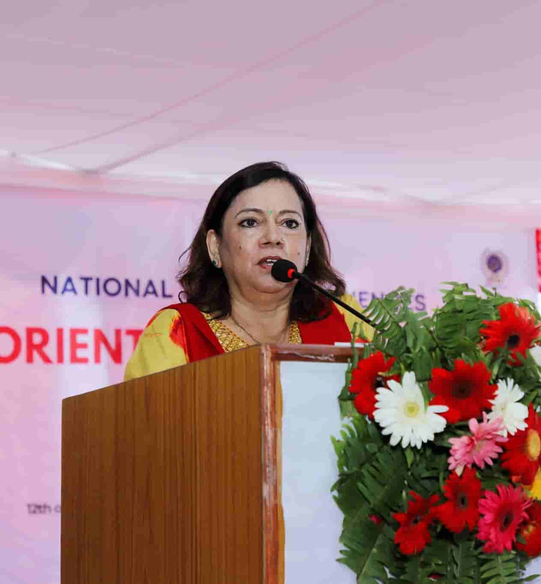

Learning is a Tressure that will follow its owner everywhere
"NIST (NSS) is a premier education provider dedicated to shaping the future by offering world-class academic programs, exceptional faculty, and a holistic learning environment that empowers students to fetch their treasure"
NIST National School of Sciences is a premier education institution, which was established in 1993. It is situated at Lainchour, strategically important location in the Kathmandu valley, and is one of the constituent institutions under the NIST Foundation. The school has been conducting Plus 2 programme (Grade 11 – 12), now Upper Secondary school classes, both in Science and Management for the last three decades. The school follows the national curriculum under the National Examination Board (NEB), Nepal. The NIST Foundation was initiated by a group of scientistsand academicians.
Vision
Misssion
Our Philosophy
Dr.Madhav Prasad Baral Chairman
The school runs upper secondary (Grade 11 and 12) courses based on the national curriculum prescribed by the National Examination Board (NEB). Earlier known as Plus 2 programme, this is offered as a separate stand–alone two-year course that prepares students for undergraduate courses at university. Upon successful completion of the Secondary Education Examination (SEE) i.e. Grade 10, conducted by the NEB, students are eligible to pursue Grade 11–12 course. Upon enrolling in the course, students have the flexibility to choose elective subjects as per their interest and career goals. The core subjects are mandatory for every student to pursue, and are designed to provide in-depth knowledge and understanding. The academic programme is led by the Principal ably supported by the Programme In–charges, Coordinators and a competent team of academic faculty in addition to an experienced team of administrators. Currently, the school is providing subjects related to Science and Management, and plans are afoot to offer other subjects related to Law, Arts and Humanities in the future.
 Located at the heart of the capital city, Kathmandu and easily accessible because of the extensive network of public transport, the National School of Sciences, popularly known as NIST College has been at the helm of Upper Secondary school education (Grade 11–12), earlier known as Plus 2, for nearly three decades. Started with a humble beginning from a total of 157 students and 15 staff including administrative and support staff in the Science stream only, the National School of Sciences has come a long way. The annual intake in the school hovers at around 1,200 students in Grade 11 (both Science and Management programs). Through all these years of providing academic service for aspiring students, the National School of Sciences has rightfully carved a niche for itself and is acknowledged for providing quality education within an affordable fee structure. Enriching the learning experience of students has always been, and will be at the core of our vision and mission, and we are always guided by the need to provide a conducive environment and services for our learners to make their overall experience truly elevating. The need of the hour demands a paradigm shift in the way we cater to the educational needs of the new generation of learners. Today, education has to be imparted effectively through a balanced and holistic approach to teaching–learning i.e. the development of the learner’s intellectual, emotional, social, and personal skills, physical well-being, and artistic, creative, and spiritual potential. The school seeks to engage students through a participatory approach to teaching–learning process, and encourages personal and collective responsibility.